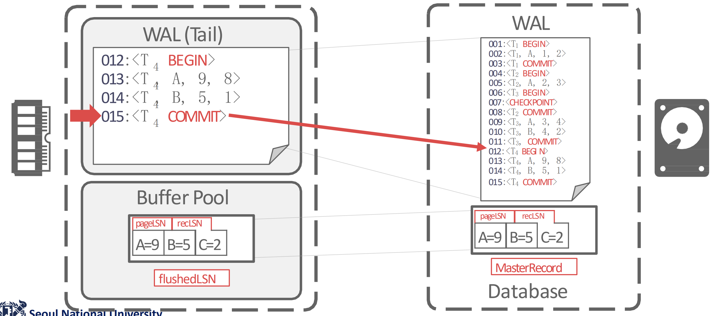
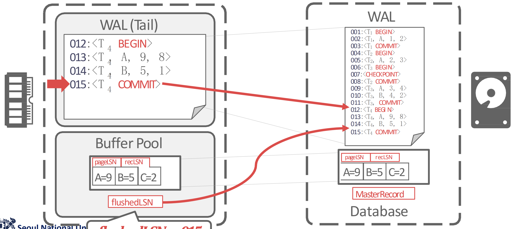
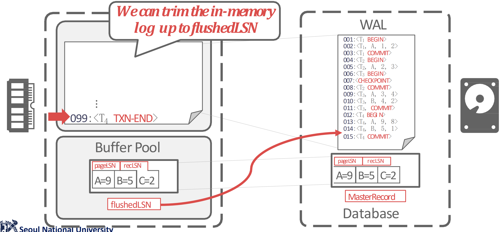
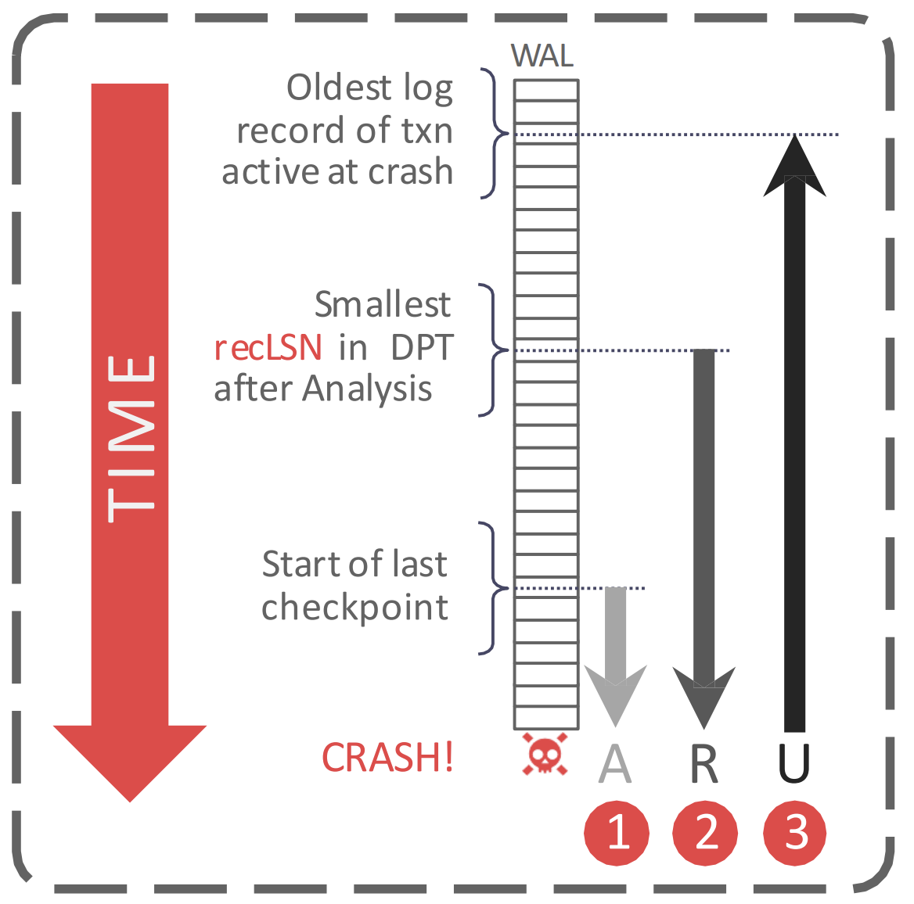
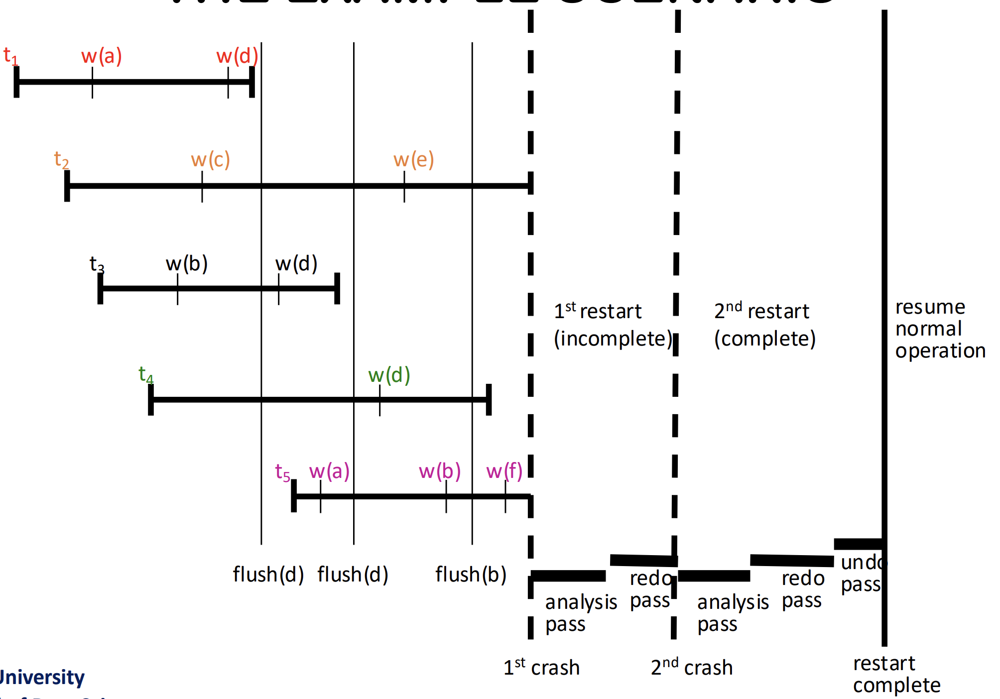
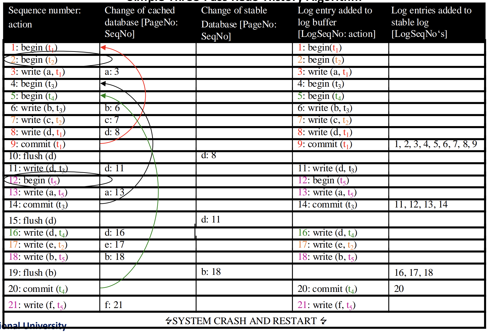
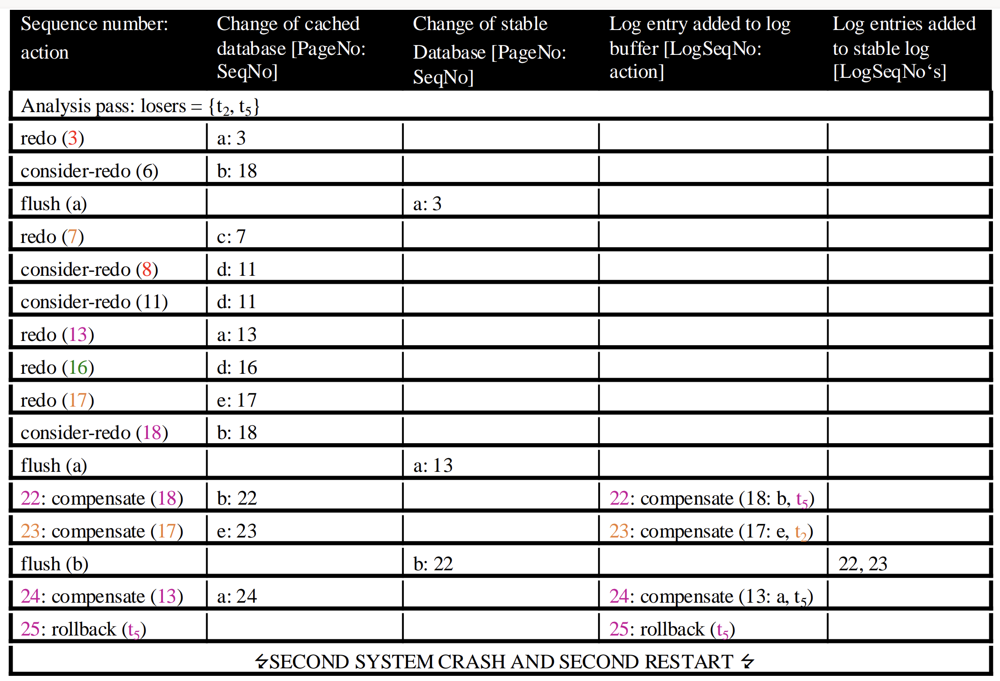
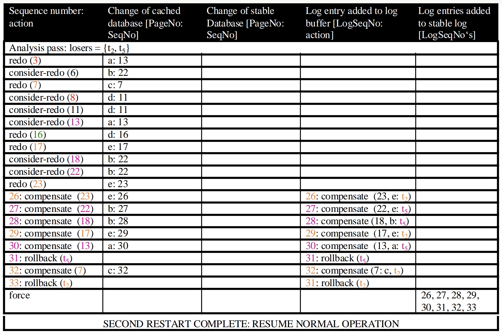
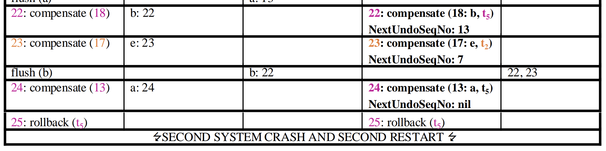
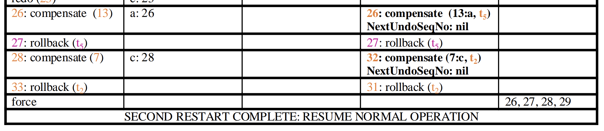

<!DOCTYPE html>
<html><head><title>23. Database Recovery (SNU GSDS BKMS-01)</title><meta charSet="utf-8"/><meta name="viewport" content="width=device-width, initial-scale=1.0"/><meta property="og:title" content="23. Database Recovery (SNU GSDS BKMS-01)"/><meta property="og:description" content="서울대학교 데이터사이언스대학원 정형수 교수님의 &amp;quot;데이터사이언스 응용을 위한 빅데이터 및 지식 관리 시스템&amp;quot; 강의를 필기한 내용입니다. 목차 ARIES § 일단 가정은 WAL 을 사용하고 STEAL, NO FORCE 정책이다. 여기서의 핵심 아이디어는 일단 전부 REDO 해서 (Repeating History) crash 바로 직전까지 복구해 Durability 를 보장한다."/><meta property="og:image" content="https://mdg.haeramk.im/static/og-image.png"/><meta property="og:width" content="1200"/><meta property="og:height" content="675"/><link rel="icon" href="../../../../../static/icon.png"/><meta name="description" content="서울대학교 데이터사이언스대학원 정형수 교수님의 &amp;quot;데이터사이언스 응용을 위한 빅데이터 및 지식 관리 시스템&amp;quot; 강의를 필기한 내용입니다. 목차 ARIES § 일단 가정은 WAL 을 사용하고 STEAL, NO FORCE 정책이다. 여기서의 핵심 아이디어는 일단 전부 REDO 해서 (Repeating History) crash 바로 직전까지 복구해 Durability 를 보장한다."/><meta name="generator" content="Quartz"/><link rel="preconnect" href="https://fonts.googleapis.com"/><link rel="preconnect" href="https://fonts.gstatic.com"/><link href="../../../../../index.css" rel="stylesheet" type="text/css" spa-preserve/><link href="https://cdn.jsdelivr.net/npm/katex@0.16.0/dist/katex.min.css" rel="stylesheet" type="text/css" spa-preserve/><link href="https://fonts.googleapis.com/css2?family=IBM Plex Mono&amp;family=Gowun Batang:wght@400;700&amp;family=Gowun Dodum:ital,wght@0,400;0,600;1,400;1,600&amp;display=swap" rel="stylesheet" type="text/css" spa-preserve/><script src="../../../../../prescript.js" type="application/javascript" spa-preserve></script><script type="application/javascript" spa-preserve>const fetchData = fetch(`../../../../../static/contentIndex.json`).then(data => data.json())</script></head><body data-slug="gardens/database/originals/bkms01.fall.2024.gsds.snu.ac.kr/lectures/23.-Database-Recovery"><div id="quartz-root" class="page"><div id="quartz-body"><div class="left sidebar"><h1 class="page-title "><a href="../../../../..">Madison Digital Garden</a></h1><div class="spacer mobile-only"></div><div class="search "><div id="search-icon"><p>Search</p><div></div><svg tabIndex="0" aria-labelledby="title desc" role="img" xmlns="http://www.w3.org/2000/svg" viewBox="0 0 19.9 19.7"><title id="title">Search</title><desc id="desc">Search</desc><g class="search-path" fill="none"><path stroke-linecap="square" d="M18.5 18.3l-5.4-5.4"></path><circle cx="8" cy="8" r="7"></circle></g></svg></div><div id="search-container"><div id="search-space"><input autocomplete="off" id="search-bar" name="search" type="text" aria-label="Search for something" placeholder="Search for something"/><div id="results-container"></div></div></div></div><div class="darkmode "><input class="toggle" id="darkmode-toggle" type="checkbox" tabIndex="-1"/><label id="toggle-label-light" for="darkmode-toggle" tabIndex="-1"><svg xmlns="http://www.w3.org/2000/svg" xmlnsXlink="http://www.w3.org/1999/xlink" version="1.1" id="dayIcon" x="0px" y="0px" viewBox="0 0 35 35" style="enable-background:new 0 0 35 35;" xmlSpace="preserve"><title>Light mode</title><path d="M6,17.5C6,16.672,5.328,16,4.5,16h-3C0.672,16,0,16.672,0,17.5    S0.672,19,1.5,19h3C5.328,19,6,18.328,6,17.5z M7.5,26c-0.414,0-0.789,0.168-1.061,0.439l-2,2C4.168,28.711,4,29.086,4,29.5    C4,30.328,4.671,31,5.5,31c0.414,0,0.789-0.168,1.06-0.44l2-2C8.832,28.289,9,27.914,9,27.5C9,26.672,8.329,26,7.5,26z M17.5,6    C18.329,6,19,5.328,19,4.5v-3C19,0.672,18.329,0,17.5,0S16,0.672,16,1.5v3C16,5.328,16.671,6,17.5,6z M27.5,9    c0.414,0,0.789-0.168,1.06-0.439l2-2C30.832,6.289,31,5.914,31,5.5C31,4.672,30.329,4,29.5,4c-0.414,0-0.789,0.168-1.061,0.44    l-2,2C26.168,6.711,26,7.086,26,7.5C26,8.328,26.671,9,27.5,9z M6.439,8.561C6.711,8.832,7.086,9,7.5,9C8.328,9,9,8.328,9,7.5    c0-0.414-0.168-0.789-0.439-1.061l-2-2C6.289,4.168,5.914,4,5.5,4C4.672,4,4,4.672,4,5.5c0,0.414,0.168,0.789,0.439,1.06    L6.439,8.561z M33.5,16h-3c-0.828,0-1.5,0.672-1.5,1.5s0.672,1.5,1.5,1.5h3c0.828,0,1.5-0.672,1.5-1.5S34.328,16,33.5,16z     M28.561,26.439C28.289,26.168,27.914,26,27.5,26c-0.828,0-1.5,0.672-1.5,1.5c0,0.414,0.168,0.789,0.439,1.06l2,2    C28.711,30.832,29.086,31,29.5,31c0.828,0,1.5-0.672,1.5-1.5c0-0.414-0.168-0.789-0.439-1.061L28.561,26.439z M17.5,29    c-0.829,0-1.5,0.672-1.5,1.5v3c0,0.828,0.671,1.5,1.5,1.5s1.5-0.672,1.5-1.5v-3C19,29.672,18.329,29,17.5,29z M17.5,7    C11.71,7,7,11.71,7,17.5S11.71,28,17.5,28S28,23.29,28,17.5S23.29,7,17.5,7z M17.5,25c-4.136,0-7.5-3.364-7.5-7.5    c0-4.136,3.364-7.5,7.5-7.5c4.136,0,7.5,3.364,7.5,7.5C25,21.636,21.636,25,17.5,25z"></path></svg></label><label id="toggle-label-dark" for="darkmode-toggle" tabIndex="-1"><svg xmlns="http://www.w3.org/2000/svg" xmlnsXlink="http://www.w3.org/1999/xlink" version="1.1" id="nightIcon" x="0px" y="0px" viewBox="0 0 100 100" style="enable-background='new 0 0 100 100'" xmlSpace="preserve"><title>Dark mode</title><path d="M96.76,66.458c-0.853-0.852-2.15-1.064-3.23-0.534c-6.063,2.991-12.858,4.571-19.655,4.571  C62.022,70.495,50.88,65.88,42.5,57.5C29.043,44.043,25.658,23.536,34.076,6.47c0.532-1.08,0.318-2.379-0.534-3.23  c-0.851-0.852-2.15-1.064-3.23-0.534c-4.918,2.427-9.375,5.619-13.246,9.491c-9.447,9.447-14.65,22.008-14.65,35.369  c0,13.36,5.203,25.921,14.65,35.368s22.008,14.65,35.368,14.65c13.361,0,25.921-5.203,35.369-14.65  c3.872-3.871,7.064-8.328,9.491-13.246C97.826,68.608,97.611,67.309,96.76,66.458z"></path></svg></label></div></div><div class="center"><div class="page-header"><div class="popover-hint"><h1 class="article-title ">23. Database Recovery (SNU GSDS BKMS-01)</h1><p class="content-meta ">Dec 04, 2024, 14 min read</p><ul class="tags "><li><a href="../../../../../tags/database" class="internal tag-link">#database</a></li><li><a href="../../../../../tags/originals" class="internal tag-link">#originals</a></li><li><a href="../../../../../tags/snu-bkms24f" class="internal tag-link">#snu-bkms24f</a></li></ul></div></div><article class="popover-hint"><blockquote class="callout" data-callout="info">
<div class="callout-title">
                  <div class="callout-icon"><svg xmlns="http://www.w3.org/2000/svg" width="100%" height="100%" viewBox="0 0 24 24" fill="none" stroke="currentColor" stroke-width="2" stroke-linecap="round" stroke-linejoin="round"><circle cx="12" cy="12" r="10"></circle><line x1="12" y1="16" x2="12" y2="12"></line><line x1="12" y1="8" x2="12.01" y2="8"></line></svg></div>
                  <div class="callout-title-inner"><p>서울대학교 데이터사이언스대학원 정형수 교수님의 &quot;데이터사이언스 응용을 위한 빅데이터 및 지식 관리 시스템&quot; 강의를 필기한 내용입니다. </p></div>
                  
                </div>
<ul>
<li><a href="../../../../../gardens/database/originals/bkms01.fall.2024.gsds.snu.ac.kr/(SNU-GSDS)-Bigdata-and-Knowledge-Management-Systems-01" class="internal" data-slug="gardens/database/originals/bkms01.fall.2024.gsds.snu.ac.kr/(SNU-GSDS)-Bigdata-and-Knowledge-Management-Systems-01">목차</a></li>
</ul>
</blockquote>
<h2 id="aries">ARIES<a aria-hidden="true" tabindex="-1" href="#aries" class="internal"> §</a></h2>
<ul>
<li>일단 가정은 <a href="../../../../../gardens/database/recovery/terms/Write-Ahead-Log,-WAL-(Database-Recovery)" class="internal" data-slug="gardens/database/recovery/terms/Write-Ahead-Log,-WAL-(Database-Recovery)">WAL</a> 을 사용하고 <a href="../../../../../gardens/database/recovery/terms/STEAL,-NO_STEAL-Policy-(Database-Recovery)" class="internal" data-slug="gardens/database/recovery/terms/STEAL,-NO_STEAL-Policy-(Database-Recovery)">STEAL</a>, <a href="../../../../../gardens/database/recovery/terms/FORCE,-NO_FORCE-Policy-(Database-Recovery)" class="internal" data-slug="gardens/database/recovery/terms/FORCE,-NO_FORCE-Policy-(Database-Recovery)">NO FORCE</a> 정책이다.</li>
<li>여기서의 핵심 아이디어는
<ul>
<li>일단 전부 REDO 해서 (<em>Repeating History</em>) crash 바로 직전까지 복구해 <a href="../../../../../gardens/database/transaction/terms/Transaction,-ACID-(Database)" class="internal" data-slug="gardens/database/transaction/terms/Transaction,-ACID-(Database)">Durability</a> 를 보장한다.</li>
<li>근데 crash 직전에 돌고 있던 txn 들은 restart 시에 다시 돌아갈 리가 없기 때문에 전부 abort 된거라고 생각해서 얘네들을 UNDO 하면서 <a href="../../../../../gardens/database/transaction/terms/Transaction,-ACID-(Database)" class="internal" data-slug="gardens/database/transaction/terms/Transaction,-ACID-(Database)">Atomicity</a> 를 보장한다.</li>
<li>이때, UNDO 에 대한 log 도 남기며 UNDO fail 이 일어나도 이전에 UNDO 한 것들을 반복하지 않게 한다.</li>
</ul>
</li>
</ul>
<h2 id="log-sequence-number-lsn">Log Sequence Number: LSN<a aria-hidden="true" tabindex="-1" href="#log-sequence-number-lsn" class="internal"> §</a></h2>
<ul>
<li>각 log 는 globally growing sequence number 를 받고 이걸 <em>LSN</em> 이라고 부른다.
<ul>
<li>근데 even 하게 증가하지는 않는다: 단 하나의 무한정 증가하는 log 파일에 log 가 append only 로 저장된다고 가정하고 이때의 offset 이 LSN 이 된다.</li>
<li>따라서 log message 가 크면 증가폭이 클 수도 있다.</li>
</ul>
</li>
<li>근데 이 값을 어떻게 활용하는지가 중요하다.
<ul>
<li><em>PageLSN</em>: Page 를 변경한 마지막 LSN 을 말한다.
<ul>
<li>즉, 이건 page 를 변경할때마다 update 된다.</li>
</ul>
</li>
<li><em>RecLSN</em> (<em>RecoveryLSN</em>, <em>FirstLSN</em>): Page 가 flush 된 이후 처음으로 변경한 operation 의 log LSN</li>
<li><em>FlushLSN</em>: Memory 에 저장하는, disk 에 flush 한 가장 최신의 LSN 을 말한다.
<ul>
<li>즉, 이건 log 를 flush 할 때마다 존재한다.</li>
<li>이건 WAL protocol 을 위해 존재한다.</li>
<li>만약에 buffer page 에 적힌 <em>PageLSN</em> 이 100 인데 flushLSN 이 50이라면 아직 저 page 를 바꾼 log 가 flush 되지 않았다는 의미이다.</li>
<li>따라서 <em>PageLSN</em> > <em>FlushLSN</em> 이면 우선 log flush 를 하고 page flush 를 해서 WAL 을 준수한다.</li>
<li>만약에 flush 된 pageLSN 이 더 높다면 crash 시에 이놈을 UNDO 할 방법이 없다.
<ul>
<li>가령 disk 로 내려간 page 의 pageLSN 이 100 이고 flushLSN 이 50 인 상황에서 crash 가 나버리면 recovery 시에 이놈을 UNDO 하기 위해서 100 번 LSN 이 필요한데 이놈이 flush 되기 전데 crash 가 났으므로 UNDO 를 못한다.</li>
<li>따라서 atomicity 가 위배된다.</li>
</ul>
</li>
<li>즉, 이 번호까지는 AD 가 위배되어도 복구가 가능하다는 의미이다.</li>
</ul>
</li>
</ul>
</li>
</ul>
<h2 id="transaction-commit-procedure">Transaction COMMIT Procedure<a aria-hidden="true" tabindex="-1" href="#transaction-commit-procedure" class="internal"> §</a></h2>
<ul>
<li>Txn <code>COMMIT</code> 할때는 다음처럼 작동한다:</li>
</ul>
<p></p>
<ol>
<li>Commit log 를 생성하고</li>
<li>해당 commit log 의 LSN 까지 flush 한다.</li>
</ol>
<p></p>
<ol start="3">
<li>FlushLSN 을 이 LSN 으로 고쳐준다.</li>
<li>다음에 commit 된다.</li>
</ol>
<p></p>
<ol start="5">
<li>마지막으로 <code>TXN-END</code> 라는 log 를 생성한 뒤에 log buffer 를 비워준다.
<ul>
<li>이건 아마 commit 과정에 문제가 생길 때를 위함이니라.</li>
<li>근데 이건 바로 flush 될 필요가 없다.</li>
</ul>
</li>
</ol>
<ul>
<li>참고로 log buffer 와 log file 은 circular buffer 로 관리되며 반복적으로 재활용한다.</li>
</ul>
<h2 id="transaction-abort-procedure">Transaction ABORT Procedure<a aria-hidden="true" tabindex="-1" href="#transaction-abort-procedure" class="internal"> §</a></h2>
<ul>
<li>Txn <code>ABORT</code> 는 ARIES 에서의 UNDO 와 동일하게 작동하되, 해당 txn 에 대한 것만 건든다.</li>
<li>따라서 각 log 에는 <em>PrevLSN</em> 이라는 것이 있어서 하나의 txn 에 대한 이전 log 를 linked list 로 따라갈 수 있게 한다.</li>
<li>ARIES 에서의 UNDO 와 동일하게 작동한다는 것은, UNDO 에 대한 log 도 같이 생성된다는 것이다.
<ul>
<li>이걸 <em>Compensation Log Record</em> (<em>CLR</em>) 이라고 하고, 아래 에서 더 다뤄보도록 하자.</li>
</ul>
</li>
<li>그래서 과정에 대해 간단하게 말하면,
<ol>
<li><code>ABORT</code> log 를 생성한다.</li>
<li>각 log 를 UNDO 하며, CLR 을 생성한다.</li>
<li>UNDO 가 종료된 다음에는, <code>TXN-END</code> 로 txn 이 끝났다는 log 를 생성한다.</li>
</ol>
</li>
</ul>
<blockquote class="callout" data-callout="info">
<div class="callout-title">
                  <div class="callout-icon"><svg xmlns="http://www.w3.org/2000/svg" width="100%" height="100%" viewBox="0 0 24 24" fill="none" stroke="currentColor" stroke-width="2" stroke-linecap="round" stroke-linejoin="round"><circle cx="12" cy="12" r="10"></circle><line x1="12" y1="16" x2="12" y2="12"></line><line x1="12" y1="8" x2="12.01" y2="8"></line></svg></div>
                  <div class="callout-title-inner"><p>여기부터는 <code>2024-12-09</code> 내용</p></div>
                  
                </div>
</blockquote>
<blockquote class="callout" data-callout="success">
<div class="callout-title">
                  <div class="callout-icon"><svg xmlns="http://www.w3.org/2000/svg" width="100%" height="100%" viewBox="0 0 24 24" fill="none" stroke="currentColor" stroke-width="2" stroke-linecap="round" stroke-linejoin="round"><polyline points="20 6 9 17 4 12"></polyline></svg></div>
                  <div class="callout-title-inner"><p>옮겨진 section: <a href="../../../../../gardens/database/recovery/terms/Compensation-Log-Record,-CLR-(Database-Recovery)" class="internal" data-slug="gardens/database/recovery/terms/Compensation-Log-Record,-CLR-(Database-Recovery)">CLR</a></p></div>
                  
                </div>
</blockquote>
<h2 id="recovery">Recovery<a aria-hidden="true" tabindex="-1" href="#recovery" class="internal"> §</a></h2>
<ul>
<li>DB 가 start 되자마자 첫번째로 실행하는 recovery 절차에 대해 알아보자.</li>
</ul>
<p></p>
<ul>
<li>크게 세 phase 로 나뉜다: (1) Analysis, (2) REDO, (3) UNDO</li>
</ul>
<h3 id="1-analysis-phase">1: Analysis Phase<a aria-hidden="true" tabindex="-1" href="#1-analysis-phase" class="internal"> §</a></h3>
<ul>
<li>여기에서는 Checkpoint 를 읽고, Checkpoint ~ 마지막 WAL 까지 쭉 훎으면서:</li>
<li>어떤놈이 crash 시점에 uncommitted 였는지 (즉, UNDO 가 필요한 애들 - <em>Loser</em> 라고 부른다.), committed 였는지 (즉, REDO 가 필요한 애들 - <em>Winner</em> 라고 부른다.) 검사한다.
<ul>
<li>원래는 checkpoint 부터 sequential scan 하는데, optimize 되어 있어서 거의 바로 알아낼 수 있다고 한다.</li>
</ul>
</li>
</ul>
<h3 id="2-redo-phase">2: REDO Phase<a aria-hidden="true" tabindex="-1" href="#2-redo-phase" class="internal"> §</a></h3>
<ul>
<li>우선 REDO log 를 쭉 훑으며 전부 반영하는 작업을 한다.</li>
<li>그럼 crash 나기 직전의 상태로 복구되게 되고, 따라서 D 는 만족되는 상태가 된다.</li>
</ul>
<h3 id="3-undo-phase">3: UNDO Phase<a aria-hidden="true" tabindex="-1" href="#3-undo-phase" class="internal"> §</a></h3>
<ul>
<li>근데 uncommit txn 이 작업한 것도 같이 반영되게 되는데, 이 txn 들은 다시 살아나지 못하기 때문에 A 를 위해서 얘네들을 다시 되돌리는 것을 UNDO phase 에서 한다.
<ul>
<li>위에서 말한대로, UNDO 를 할때는 CLR 을 생성해서 UNDO 를 반복하지 않게 한다.</li>
</ul>
</li>
<li>그럼 이때 어떤 txn 들이 uncommitted 인지 (loser 인지) 알아야 하는데, 이건 맨 처음의 analysis phase 에서 이미 알아냈다.</li>
</ul>
<h2 id="recovery-scenario">Recovery Scenario<a aria-hidden="true" tabindex="-1" href="#recovery-scenario" class="internal"> §</a></h2>
<p></p>
<ul>
<li>기본적인 상황은 위와 같다.
<ul>
<li>Txn 5개가 돌고 있고, <span class="math math-inline"><span class="katex"><span class="katex-html" aria-hidden="true"><span class="base"><span class="strut" style="height:0.7651em;vertical-align:-0.15em;"></span><span class="mord"><span class="mord mathnormal">t</span><span class="msupsub"><span class="vlist-t vlist-t2"><span class="vlist-r"><span class="vlist" style="height:0.3011em;"><span style="top:-2.55em;margin-left:0em;margin-right:0.05em;"><span class="pstrut" style="height:2.7em;"></span><span class="sizing reset-size6 size3 mtight"><span class="mord mtight"><span class="mord mtight">1</span></span></span></span></span><span class="vlist-s">​</span></span><span class="vlist-r"><span class="vlist" style="height:0.15em;"><span></span></span></span></span></span></span></span></span></span></span>, <span class="math math-inline"><span class="katex"><span class="katex-html" aria-hidden="true"><span class="base"><span class="strut" style="height:0.7651em;vertical-align:-0.15em;"></span><span class="mord"><span class="mord mathnormal">t</span><span class="msupsub"><span class="vlist-t vlist-t2"><span class="vlist-r"><span class="vlist" style="height:0.3011em;"><span style="top:-2.55em;margin-left:0em;margin-right:0.05em;"><span class="pstrut" style="height:2.7em;"></span><span class="sizing reset-size6 size3 mtight"><span class="mord mtight"><span class="mord mtight">3</span></span></span></span></span><span class="vlist-s">​</span></span><span class="vlist-r"><span class="vlist" style="height:0.15em;"><span></span></span></span></span></span></span></span></span></span></span>, 그리고 <span class="math math-inline"><span class="katex"><span class="katex-html" aria-hidden="true"><span class="base"><span class="strut" style="height:0.7651em;vertical-align:-0.15em;"></span><span class="mord"><span class="mord mathnormal">t</span><span class="msupsub"><span class="vlist-t vlist-t2"><span class="vlist-r"><span class="vlist" style="height:0.3011em;"><span style="top:-2.55em;margin-left:0em;margin-right:0.05em;"><span class="pstrut" style="height:2.7em;"></span><span class="sizing reset-size6 size3 mtight"><span class="mord mtight"><span class="mord mtight">4</span></span></span></span></span><span class="vlist-s">​</span></span><span class="vlist-r"><span class="vlist" style="height:0.15em;"><span></span></span></span></span></span></span></span></span></span></span> 는 <code>COMMIT</code> 되었다.</li>
<li>첫번째 crash 뒤에 REDO 가 끝나고 UNDO 가 시작된 다음 두번째 crash 가 났다.</li>
</ul>
</li>
</ul>
<h3 id="before-1st-crash-normal-case">Before 1st Crash: Normal Case<a aria-hidden="true" tabindex="-1" href="#before-1st-crash-normal-case" class="internal"> §</a></h3>
<p></p>
<ul>
<li>이게 첫번째 crash 가 나기 전의 log 이다.
<ul>
<li>왼쪽부터 LSN+Log, buffer pool page, disk page, log buffer, disk log 순서로 상태가 표시되어 있다.</li>
</ul>
</li>
<li>이것으로 normal case scenario 를 생각해 보자.</li>
<li>일단 각 write 는 log buffer 에다만 log 를 생성하면서 진행된다.</li>
<li>그리고 9 번에서 <code>COMMIT</code> 하는 것을 보면 모든 log 가 disk log 로 내려가는 것을 볼 수 있다.
<ul>
<li>이것이 WAL 을 위한 것이다.</li>
<li>즉, D 가 깨질 것 같으니 log 를 전부 다 disk 로 내려보낸 것.</li>
<li>좀 더 구체적으로 말하면, <em>FlushLSN</em> 이 0일테고, page buffer 에의 <em>PageLSN</em> 은 9일테니 9까지 flush 를 하고 <em>FlushLSN</em> 을 9 로 update 해주게 된다.</li>
</ul>
</li>
<li>10번에서는 manual 하게 <span class="math math-inline"><span class="katex"><span class="katex-html" aria-hidden="true"><span class="base"><span class="strut" style="height:0.6944em;"></span><span class="mord mathnormal">d</span></span></span></span></span> 를 flush 한 것인데, 이때는 더 이상 flush 할 log 가 없으므로 log flush 는 skip 한다.
<ul>
<li>참고: flush log 는 LSN 은 발급되지만 이놈은 log flush 되지는 않는듯하다.</li>
</ul>
</li>
<li>14, 15 번도 동일하다. 14번에서는 <code>COMMIT</code> 이 되어 log 들이 전부 flush 되고, 15번에서는 manual 하게 flush 하지만 flush 할 log 가 없는 상황.</li>
<li>19번의 flush 는 좀 다르다. 여기서도 manual 하게 page buffer 를 flush 하지만, 이때는 flush 할 log 가 있으므로 page buffer 가 flush 되며 A 가 깨질 것 같으니 남은 log 를 전부 flush 하는 것.</li>
</ul>
<h3 id="after-1st-crash">After 1st Crash<a aria-hidden="true" tabindex="-1" href="#after-1st-crash" class="internal"> §</a></h3>
<p></p>
<ul>
<li>이것이 첫번째 crash 에서의 recovery 과정이다.
<ul>
<li>여기서의 첫번째 column 이 log 가 아니라 recovery action 이라는 것 외에는 위와 동일하다.</li>
</ul>
</li>
<li>그리고 analysis phase 결과 loser 는 <span class="math math-inline"><span class="katex"><span class="katex-html" aria-hidden="true"><span class="base"><span class="strut" style="height:0.7651em;vertical-align:-0.15em;"></span><span class="mord"><span class="mord mathnormal">t</span><span class="msupsub"><span class="vlist-t vlist-t2"><span class="vlist-r"><span class="vlist" style="height:0.3011em;"><span style="top:-2.55em;margin-left:0em;margin-right:0.05em;"><span class="pstrut" style="height:2.7em;"></span><span class="sizing reset-size6 size3 mtight"><span class="mord mtight"><span class="mord mtight">2</span></span></span></span></span><span class="vlist-s">​</span></span><span class="vlist-r"><span class="vlist" style="height:0.15em;"><span></span></span></span></span></span></span></span></span></span></span>, <span class="math math-inline"><span class="katex"><span class="katex-html" aria-hidden="true"><span class="base"><span class="strut" style="height:0.7651em;vertical-align:-0.15em;"></span><span class="mord"><span class="mord mathnormal">t</span><span class="msupsub"><span class="vlist-t vlist-t2"><span class="vlist-r"><span class="vlist" style="height:0.3011em;"><span style="top:-2.55em;margin-left:0em;margin-right:0.05em;"><span class="pstrut" style="height:2.7em;"></span><span class="sizing reset-size6 size3 mtight"><span class="mord mtight"><span class="mord mtight">5</span></span></span></span></span><span class="vlist-s">​</span></span><span class="vlist-r"><span class="vlist" style="height:0.15em;"><span></span></span></span></span></span></span></span></span></span></span> 가 된다.</li>
<li>여기서 저 <code>consider-redo(6)</code> 에 주목하자.
<ul>
<li>Log 를 보면 6번은 <span class="math math-inline"><span class="katex"><span class="katex-html" aria-hidden="true"><span class="base"><span class="strut" style="height:1em;vertical-align:-0.25em;"></span><span class="mord mathnormal" style="margin-right:0.02691em;">w</span><span class="mord mathnormal" style="margin-right:0.02778em;">r</span><span class="mord mathnormal">i</span><span class="mord mathnormal">t</span><span class="mord mathnormal">e</span><span class="mopen">(</span><span class="mord mathnormal">b</span><span class="mpunct">,</span><span class="mspace" style="margin-right:0.1667em;"></span><span class="mord"><span class="mord mathnormal">t</span><span class="msupsub"><span class="vlist-t vlist-t2"><span class="vlist-r"><span class="vlist" style="height:0.3011em;"><span style="top:-2.55em;margin-left:0em;margin-right:0.05em;"><span class="pstrut" style="height:2.7em;"></span><span class="sizing reset-size6 size3 mtight"><span class="mord mtight"><span class="mord mtight">3</span></span></span></span></span><span class="vlist-s">​</span></span><span class="vlist-r"><span class="vlist" style="height:0.15em;"><span></span></span></span></span></span></span><span class="mclose">)</span></span></span></span></span> 이다. 근데 19번을 보면 <span class="math math-inline"><span class="katex"><span class="katex-html" aria-hidden="true"><span class="base"><span class="strut" style="height:1em;vertical-align:-0.25em;"></span><span class="mord mathnormal" style="margin-right:0.10764em;">f</span><span class="mord mathnormal" style="margin-right:0.01968em;">l</span><span class="mord mathnormal">u</span><span class="mord mathnormal">s</span><span class="mord mathnormal">h</span><span class="mopen">(</span><span class="mord mathnormal">b</span><span class="mclose">)</span></span></span></span></span> 로 <span class="math math-inline"><span class="katex"><span class="katex-html" aria-hidden="true"><span class="base"><span class="strut" style="height:0.6944em;"></span><span class="mord mathnormal">b</span></span></span></span></span> 를 flush 해주고 있다.</li>
<li>따라서 19번에서 해당 page 의 <em>PageLSN</em> 은 19 로 적혀서 disk 에 반영되었을 것이다.</li>
<li>이에 6번을 REDO 할때, disk 에서 읽어온 page 도 <em>PageLSN</em> 이 19 로 되어 있을 것이고 이것은 6보다 큰 것이기에 해당 operation 은 이미 disk 에 반영이 되어 있다고 판단해 <code>consider-redo</code> action 을 취하게 된다.</li>
</ul>
</li>
<li>REDO 중간중간에 flush 를 하는 것을 볼 수 있는데, 여기에는 특별한 규칙은 없는듯 하다.</li>
<li>REDO 이후에 UNDO 가 시작된다. Disk 에 저장된 마지막 update log 는 18번이므로 여기서부터 시작한다.</li>
<li>그래서 18, 17, 13 을 UNDO 하며 CLR 을 생성하고 있는 것을 볼 수 있다.
<ul>
<li>주목할 것은 이 예시에서는 <em>UndoNext</em> 는 적어주지 않고 있는 것을 볼 수 있다.</li>
<li>이에 의한 효과는 아래의 2nd crash 에서 살펴보자.</li>
</ul>
</li>
<li>그리고 한번 manual 하게 flush 를 하는데, 이때는 A 를 위해 log 들이 flush 된다.
<ul>
<li>따라서 22, 23 번이 내려간다.</li>
</ul>
</li>
<li>UNDO 가 완료된 txn 은 rollback log 를 남겨서 해당 txn 은 더 이상 loser 가 아님을 알려준다.
<ul>
<li>근데 이 예제에서는 rollback log 가 flush 되지 않았고, 따라서 두번째 recovery 에서는 이 rollback log 를 볼 수 없으므로 해당 txn 은 여전히 loser 이다.</li>
<li>만일 이 rollback log 가 flush 되었다면 다음 recovery 가 발생한다면 여기에서는 loser 에서 제외된다.</li>
</ul>
</li>
</ul>
<h3 id="after-2nd-crash">After 2nd Crash<a aria-hidden="true" tabindex="-1" href="#after-2nd-crash" class="internal"> §</a></h3>
<p></p>
<ul>
<li>이건 두번째 crash 에서의 recovery 이다.</li>
<li>여기서 주목할 것은:</li>
<li>일단 저 <code>consider-redo(22)</code> 와 <code>redo(23)</code> 이다.
<ul>
<li>UNDO 도중에 crash 가 난다면 새로운 REDO 에서는 이 compensate log 까지 다 한다.</li>
<li>REDO 는 가장 최신까지의 모든 log 를 다 하기 때문.</li>
</ul>
</li>
<li>그리고 저 <code>consider-redo(13)</code> 이다. 이놈은 첫번째 recovery 에서는 <code>redo(13)</code> 이었는데 왜 이제는 <code>consider-redo</code> 가 된것일까?
<ul>
<li>그건 첫번째 recovery 에서 <span class="math math-inline"><span class="katex"><span class="katex-html" aria-hidden="true"><span class="base"><span class="strut" style="height:1em;vertical-align:-0.25em;"></span><span class="mord mathnormal" style="margin-right:0.10764em;">f</span><span class="mord mathnormal" style="margin-right:0.01968em;">l</span><span class="mord mathnormal">u</span><span class="mord mathnormal">s</span><span class="mord mathnormal">h</span><span class="mopen">(</span><span class="mord mathnormal">a</span><span class="mclose">)</span></span></span></span></span> 로 한번 flush 했기 때문이다.</li>
<li>따라서 자연스레 <em>PageLSN</em> 이 커져 두번째 recovery 에서는 무시되는 것.</li>
</ul>
</li>
<li>그리고 26번을 보면 23번을 UNDO 하고 있는 것을 볼 수 있다.
<ul>
<li>이건 큰 문제다. 왜냐면 23번은 17번에 대한 UNDO 였기 때문에, 23번을 UNDO 한다는 것은 17 번을 두번 UNDO 하는 것이어서 A 가 깨지는 상태가 되기 때문이다.</li>
<li>이것은 27번에서도 마찬가지이다.</li>
<li>이것을 위해 <em>UndoNext</em> 가 필요하다는 것을 알 수 있다. <em>UndoNext</em> 로 아직 UNDO 하지 않은 REDO 를 UNDO 하러 가야 하기 때문이다.</li>
</ul>
</li>
<li>참고로,
<ul>
<li>REDO 시에 어떤 log 에 대해 나중에 compensate log 가 있으면 이 log 는 REDO 하지 않는다.</li>
<li>REDO 시에 어떤 txn 에 대한 rollback log 가 있으면 이 txn 에 대한 log 도 REDO 하지 않는다.</li>
</ul>
</li>
</ul>
<h3 id="using-undonext">Using <em>UndoNext</em><a aria-hidden="true" tabindex="-1" href="#using-undonext" class="internal"> §</a></h3>
<ul>
<li>그래서 <em>UndoNext</em> 를 사용하게 하면, 첫번째 recovery 는 다음처럼 된다.
<ul>
<li>18번을 UNDO 한 다음에는, 이놈이 <span class="math math-inline"><span class="katex"><span class="katex-html" aria-hidden="true"><span class="base"><span class="strut" style="height:0.7651em;vertical-align:-0.15em;"></span><span class="mord"><span class="mord mathnormal">t</span><span class="msupsub"><span class="vlist-t vlist-t2"><span class="vlist-r"><span class="vlist" style="height:0.3011em;"><span style="top:-2.55em;margin-left:0em;margin-right:0.05em;"><span class="pstrut" style="height:2.7em;"></span><span class="sizing reset-size6 size3 mtight"><span class="mord mtight"><span class="mord mtight">5</span></span></span></span></span><span class="vlist-s">​</span></span><span class="vlist-r"><span class="vlist" style="height:0.15em;"><span></span></span></span></span></span></span></span></span></span></span> 의 log 였기 때문에 이놈의 <em>PrevLSN</em> 인 13번이 <em>UndoNext</em> 로 적혀있는 것을 볼 수 있다.</li>
<li>만약 <em>UndoNext</em> 에 적을게 없다면, <code>nil</code> 을 적는다.</li>
</ul>
</li>
</ul>
<p></p>
<ul>
<li>따라서 두번째 recovery 에서는 바로 13번을 UNDO 하며 CLR 을 생성하고 있는 것을 확인할 수 있다.</li>
</ul>
<p></p>
<ul>
<li>이렇게 CLR 와 <em>UndoNext</em> 로 빠르게 UNDO 를 끝낼 수 있을 뿐 아니라 UNDO 를 UNDO 하는 바보짓도 안하게 된다.</li>
</ul>
<h2 id="recovery-considerations-and-optimization">Recovery Considerations and Optimization<a aria-hidden="true" tabindex="-1" href="#recovery-considerations-and-optimization" class="internal"> §</a></h2>
<ul>
<li>만약 Analysis phase 에서 crash 가 나면 어떡할까?
<ul>
<li>어쩔 수 없이 다시 처음부터 한다.</li>
</ul>
</li>
<li>만약 REDO phase 에서 crash 가 나면 어떡할까?
<ul>
<li>이때도 어쩔 수 없이 다시 처음부터 한다.</li>
</ul>
</li>
<li>어떻게 하면 REDO 를 빠르게 할 수 있을까?
<ul>
<li>Crash 가 다시 안날 것이라고 가정하고, background worker 로 change 를 async 하게 flush 한다.</li>
</ul>
</li>
<li>어떻게 하면 recovery 를 더 빠르게 해서 client connection 을 일찍 받을 수 있을까?
<ul>
<li>원래는 UNDO phase 까지 되면 tcp connection 을 받는게 정통이지만 요즘은 REDO phase 까지만 되어도 tcp connection 을 맺는다.</li>
</ul>
</li>
</ul></article></div><div class="right sidebar"><div class="graph "><h3>Graph View</h3><div class="graph-outer"><div id="graph-container" data-cfg="{&quot;drag&quot;:true,&quot;zoom&quot;:true,&quot;depth&quot;:1,&quot;scale&quot;:1.1,&quot;repelForce&quot;:0.5,&quot;centerForce&quot;:0.3,&quot;linkDistance&quot;:30,&quot;fontSize&quot;:0.6,&quot;opacityScale&quot;:1,&quot;showTags&quot;:true,&quot;removeTags&quot;:[]}"></div><svg version="1.1" id="global-graph-icon" xmlns="http://www.w3.org/2000/svg" xmlnsXlink="http://www.w3.org/1999/xlink" x="0px" y="0px" viewBox="0 0 55 55" fill="currentColor" xmlSpace="preserve"><path d="M49,0c-3.309,0-6,2.691-6,6c0,1.035,0.263,2.009,0.726,2.86l-9.829,9.829C32.542,17.634,30.846,17,29,17
	s-3.542,0.634-4.898,1.688l-7.669-7.669C16.785,10.424,17,9.74,17,9c0-2.206-1.794-4-4-4S9,6.794,9,9s1.794,4,4,4
	c0.74,0,1.424-0.215,2.019-0.567l7.669,7.669C21.634,21.458,21,23.154,21,25s0.634,3.542,1.688,4.897L10.024,42.562
	C8.958,41.595,7.549,41,6,41c-3.309,0-6,2.691-6,6s2.691,6,6,6s6-2.691,6-6c0-1.035-0.263-2.009-0.726-2.86l12.829-12.829
	c1.106,0.86,2.44,1.436,3.898,1.619v10.16c-2.833,0.478-5,2.942-5,5.91c0,3.309,2.691,6,6,6s6-2.691,6-6c0-2.967-2.167-5.431-5-5.91
	v-10.16c1.458-0.183,2.792-0.759,3.898-1.619l7.669,7.669C41.215,39.576,41,40.26,41,41c0,2.206,1.794,4,4,4s4-1.794,4-4
	s-1.794-4-4-4c-0.74,0-1.424,0.215-2.019,0.567l-7.669-7.669C36.366,28.542,37,26.846,37,25s-0.634-3.542-1.688-4.897l9.665-9.665
	C46.042,11.405,47.451,12,49,12c3.309,0,6-2.691,6-6S52.309,0,49,0z M11,9c0-1.103,0.897-2,2-2s2,0.897,2,2s-0.897,2-2,2
	S11,10.103,11,9z M6,51c-2.206,0-4-1.794-4-4s1.794-4,4-4s4,1.794,4,4S8.206,51,6,51z M33,49c0,2.206-1.794,4-4,4s-4-1.794-4-4
	s1.794-4,4-4S33,46.794,33,49z M29,31c-3.309,0-6-2.691-6-6s2.691-6,6-6s6,2.691,6,6S32.309,31,29,31z M47,41c0,1.103-0.897,2-2,2
	s-2-0.897-2-2s0.897-2,2-2S47,39.897,47,41z M49,10c-2.206,0-4-1.794-4-4s1.794-4,4-4s4,1.794,4,4S51.206,10,49,10z"></path></svg></div><div id="global-graph-outer"><div id="global-graph-container" data-cfg="{&quot;drag&quot;:true,&quot;zoom&quot;:true,&quot;depth&quot;:-1,&quot;scale&quot;:0.9,&quot;repelForce&quot;:0.5,&quot;centerForce&quot;:0.3,&quot;linkDistance&quot;:30,&quot;fontSize&quot;:0.6,&quot;opacityScale&quot;:1,&quot;showTags&quot;:true,&quot;removeTags&quot;:[]}"></div></div></div><div class="toc desktop-only"><button type="button" id="toc"><h3>Table of Contents</h3><svg xmlns="http://www.w3.org/2000/svg" width="24" height="24" viewBox="0 0 24 24" fill="none" stroke="currentColor" stroke-width="2" stroke-linecap="round" stroke-linejoin="round" class="fold"><polyline points="6 9 12 15 18 9"></polyline></svg></button><div id="toc-content"><ul class="overflow"><li class="depth-0"><a href="#aries" data-for="aries">ARIES</a></li><li class="depth-0"><a href="#log-sequence-number-lsn" data-for="log-sequence-number-lsn">Log Sequence Number: LSN</a></li><li class="depth-0"><a href="#transaction-commit-procedure" data-for="transaction-commit-procedure">Transaction COMMIT Procedure</a></li><li class="depth-0"><a href="#transaction-abort-procedure" data-for="transaction-abort-procedure">Transaction ABORT Procedure</a></li><li class="depth-0"><a href="#recovery" data-for="recovery">Recovery</a></li><li class="depth-1"><a href="#1-analysis-phase" data-for="1-analysis-phase">1: Analysis Phase</a></li><li class="depth-1"><a href="#2-redo-phase" data-for="2-redo-phase">2: REDO Phase</a></li><li class="depth-1"><a href="#3-undo-phase" data-for="3-undo-phase">3: UNDO Phase</a></li><li class="depth-0"><a href="#recovery-scenario" data-for="recovery-scenario">Recovery Scenario</a></li><li class="depth-1"><a href="#before-1st-crash-normal-case" data-for="before-1st-crash-normal-case">Before 1st Crash: Normal Case</a></li><li class="depth-1"><a href="#after-1st-crash" data-for="after-1st-crash">After 1st Crash</a></li><li class="depth-1"><a href="#after-2nd-crash" data-for="after-2nd-crash">After 2nd Crash</a></li><li class="depth-1"><a href="#using-undonext" data-for="using-undonext">Using UndoNext</a></li><li class="depth-0"><a href="#recovery-considerations-and-optimization" data-for="recovery-considerations-and-optimization">Recovery Considerations and Optimization</a></li></ul></div></div><div class="backlinks "><h3>Backlinks</h3><ul class="overflow"><li><a href="../../../../../gardens/database/originals/bkms01.fall.2024.gsds.snu.ac.kr/(SNU-GSDS)-Bigdata-and-Knowledge-Management-Systems-01" class="internal">(SNU GSDS) Bigdata and Knowledge Management Systems 01</a></li><li><a href="../../../../../gardens/database/recovery/terms/Compensation-Log-Record,-CLR-(Database-Recovery)" class="internal">Compensation Log Record, CLR (Database Recovery)</a></li></ul></div></div></div><footer class><hr/><p>Created with <a href="https://quartz.jzhao.xyz/">Quartz v4.1.0</a>, © 2025</p><ul><li><a href="https://github.com/haeramkeem">GitHub</a></li><li><a href="https://www.linkedin.com/in/haeram-kim-277404220">LinkedIn</a></li><li><a href="mailto:haeram.kim1@gmail.com">Email</a></li></ul></footer></div></body><script type="application/javascript">// quartz/components/scripts/quartz/components/scripts/callout.inline.ts
function toggleCallout() {
  const outerBlock = this.parentElement;
  outerBlock.classList.toggle(`is-collapsed`);
  const collapsed = outerBlock.classList.contains(`is-collapsed`);
  const height = collapsed ? this.scrollHeight : outerBlock.scrollHeight;
  outerBlock.style.maxHeight = height + `px`;
  let current = outerBlock;
  let parent = outerBlock.parentElement;
  while (parent) {
    if (!parent.classList.contains(`callout`)) {
      return;
    }
    const collapsed2 = parent.classList.contains(`is-collapsed`);
    const height2 = collapsed2 ? parent.scrollHeight : parent.scrollHeight + current.scrollHeight;
    parent.style.maxHeight = height2 + `px`;
    current = parent;
    parent = parent.parentElement;
  }
}
function setupCallout() {
  const collapsible = document.getElementsByClassName(
    `callout is-collapsible`
  );
  for (const div of collapsible) {
    const title = div.firstElementChild;
    if (title) {
      title.removeEventListener(`click`, toggleCallout);
      title.addEventListener(`click`, toggleCallout);
      const collapsed = div.classList.contains(`is-collapsed`);
      const height = collapsed ? title.scrollHeight : div.scrollHeight;
      div.style.maxHeight = height + `px`;
    }
  }
}
document.addEventListener(`nav`, setupCallout);
window.addEventListener(`resize`, setupCallout);
</script><script type="module">
          import mermaid from 'https://cdn.jsdelivr.net/npm/mermaid/dist/mermaid.esm.min.mjs';
          const darkMode = document.documentElement.getAttribute('saved-theme') === 'dark'
          mermaid.initialize({
            startOnLoad: false,
            securityLevel: 'loose',
            theme: darkMode ? 'dark' : 'default'
          });
          document.addEventListener('nav', async () => {
            await mermaid.run({
              querySelector: '.mermaid'
            })
          });
          </script><script src="https://cdn.jsdelivr.net/npm/katex@0.16.7/dist/contrib/copy-tex.min.js" type="application/javascript"></script><script src="https://www.googletagmanager.com/gtag/js?id=G-N68CCP1QHG" type="application/javascript"></script><script src="../../../../../postscript.js" type="module"></script></html>